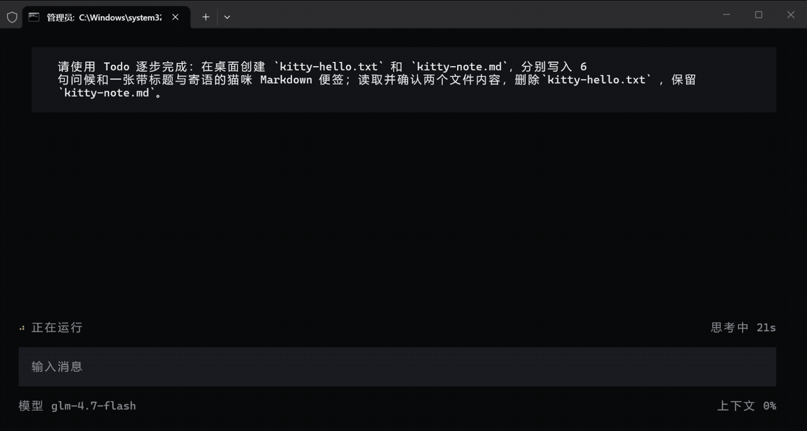

01
安装
npm install -g @jun133/kitty@latest
▄▄ ▄▄ ▄▄ ▄▄▄▄▄▄ ▄▄▄▄▄▄ ▄▄ ▄▄ ▄▄▄ ▄▄▄▄ ▄▄▄▄▄ ▄▄ ▄▄ ▄▄▄▄▄▄ ██▄█▀ ██ ██ ██ ▀███▀ ██▀██ ██ ▄▄ ██▄▄ ███▄██ ██ ██ ██ ██ ██ ██ █ ██▀██ ▀███▀ ██▄▄▄ ██ ▀██ ██

进入你准备开始的目录，安装、配置，然后打开 Kitty。
npm install -g @jun133/kitty@latest
kitty start
kitty
从最小的工具循环开始，把记忆、上下文、计划和后台任务一层层装进来。下面拆开 Kitty，看看一个智能体是怎样运转的。
最开始，模型只有一个简单循环：用户问，模型想，模型答。
用户问题
↓
模型判断
↓
输出回答模型本身像孙膑：孙膑是行动受限的军师，空有强大的大脑，自己无法行动。模型也是这样，它能分析、推理、安排下一步，但它自己碰不到外部项目。工具就是给它接上的外部能力，可以理解成望远镜、义肢、轮椅，或者任何让它能向外部探索的东西。
加入第一个工具后，模型开始能向外部探索。它先判断需不需要工具；需要时发出工具调用；系统执行工具得到工具结果；然后把“原来的用户问题 + 当前提示词 + 工具结果”一起喂回模型。模型再判断一次，继续调用工具，或者输出最终回答。
用户输入：
帮我看看这个项目是干什么的。模型可以先调用几个工具：
工具调用：read("README.md")
工具调用：read("spec.md")
工具调用：bash("npm test")工具结果回来后，模型知道：
README：项目叫 Kitty，是一个智能体。
spec：核心链路是输入、上下文、模型、工具、状态、输出。
npm test：测试通过。这一轮结束后，session 记住这些事：
用户问题：帮我看看这个项目是干什么的。
模型调用过：read README.md、read spec.md、bash npm test。
工具结果：README 说明项目用途，spec 说明核心链路，测试通过。
活跃文件：README.md、spec.md。
最后回答：这个项目是一个智能体。session 就是当前对话的工作现场。它把工具结果、活跃文件和最后回答留下来，下一轮可以接着这个现场继续。
长期记忆是项目长期放着的规则和经验。它让模型每次进入项目时，都能先知道这里长期遵守什么、有哪些已经沉淀好的做法。
在 Kitty 里，长期记忆主要来自两类东西：
AGENTS.md
项目的长期工作规则。
skills
项目的长期能力包。AGENTS.md 像项目规则：
先看事实，再做判断。
先思考，再行动。
抓根本逻辑。skill 像一份经过试错的熟练做法。上下文先给模型可用 skill 的名字和简介；模型判断任务需要某一份经验时，调用 skill_load 加载完整做法。
假设有一个 skill 叫“西红柿炒鸡蛋”：
skill 名称：西红柿炒鸡蛋
skill 简介：适合把鸡蛋炒嫩、把西红柿炒出汁。
skill 细则：
先把鸡蛋炒到刚凝固，盛出来。
再把西红柿炒出汁。
最后把鸡蛋倒回锅里一起收味。用户输入：
帮我做一盘西红柿炒鸡蛋。模型看到这份 skill 可用，判断需要这套做法，于是调用 skill_load("西红柿炒鸡蛋")。系统把 skill 细则放进当前上下文，模型按熟练做法继续回答。
上下文是这一轮真正喂给模型的整包输入。它会把前面几种东西装到一起：
系统提示词
+ 人格提示词
+ 短期记忆
+ 长期记忆
+ 工具定义
+ 用户输入
↓
发给模型用户输入：
这个项目已经写完了，请把 README 重写一下。先把这一轮的积木摆出来：
【系统提示词】你是本 session 的主导 agent。
【人格提示词】你是一位重视结构和事实的工程师，表达短、准、清楚。
【短期记忆】来自上一轮：项目的主要功能已经完成，README 已经有一份旧内容。
【长期记忆】长期规则是先看事实，再做判断，再行动；可用 skill 是“文档修改 skill”。
【工具定义】你可以使用两个工具：read 用来读取文件，edit 用来修改文件。
【用户输入】这个项目已经写完了，请把 README 重写一下。系统把这六块拼成一段完整输入，发给模型：
你是本 session 的主导 agent。你是一位重视结构和事实的工程师，表达短、准、清楚。上一轮已经确认项目的主要功能完成，README 还是旧说明。项目要求先看事实，再做判断，再行动；当前有一份“文档修改 skill”可用。你可以使用两个工具：read 用来读取文件，edit 用来修改文件。现在用户说：这个项目已经写完了，请把 README 重写一下。
模型拿到这段话后，知道该先用 read 打开旧 README，了解真实内容；再用 edit 重写说明。
完成后，它会回答：
我已经根据现有内容重写了 README。对话达到上下文极限时，模型已经装不下全部历史。Kitty 会把较早的对话整理成摘要，再把这份摘要和最近几轮对话、当前用户输入一起装进下一轮输入。
Kitty 和用户已经聊了很多轮。早期对话里完成了项目初始化、读过 README、确认项目使用 TypeScript；最近几轮正在修改一个功能的测试。现在对话已经达到上下文极限。
Kitty 先把早期对话整理成摘要，然后模型会看到：
【早期对话摘要】项目已经初始化。README 已读过。项目使用 TypeScript。
【最近对话】正在修改一个功能的测试。
【用户输入】把这个功能的提示也改清楚。这样模型既知道前面已经做到哪里，也能集中处理眼前这一步。
复杂任务先把完整步骤拆出来，再全部写进 To Do list。列表写好后，模型从第一步开始执行，每次只有一个步骤处于进行中。
用户输入：
做一盘西红柿炒鸡蛋。模型把计划写成 To Do list：
[>] 1. 把鸡蛋炒到刚凝固，盛出来。
[ ] 2. 把西红柿炒出汁。
[ ] 3. 把鸡蛋倒回锅里，一起收味。[>] 表示正在做，[ ] 表示后面要做。Kitty 的 To Do 只允许一个步骤处于进行中。第一步完成后，它会变成 [x]，第二步才变成新的 [>]。
长时间运行的命令可以进入后台。当前 agent 不需要停在原地等待，可以继续读取资料、修改文件或处理用户的新要求。
后台任务仍然属于当前会话。Kitty 记录它的进程、输出和终态；会话退出或终端异常关闭时，会回收属于这个会话的完整进程树。
测试需要运行一段时间时，Kitty 可以启动后台命令：
background_run("npm test")agent 继续处理其他工作，需要结果时再读取输出或等待终态。后台任务不会变成另一个 agent，也不会创建共享的对话记录。
判断、行动和结果，不藏在一句“完成了”后面。这里是一段可以暂停、回看和继续播放的 Kitty 运行过程。
做一盘西红柿炒鸡蛋。